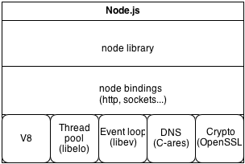
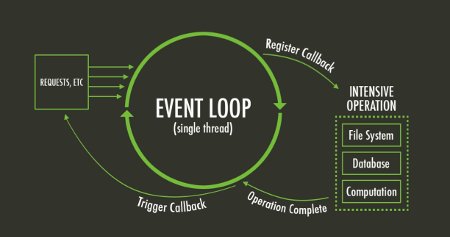
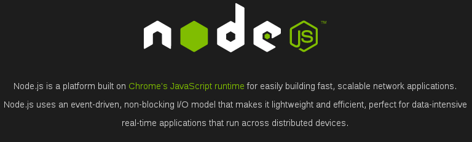
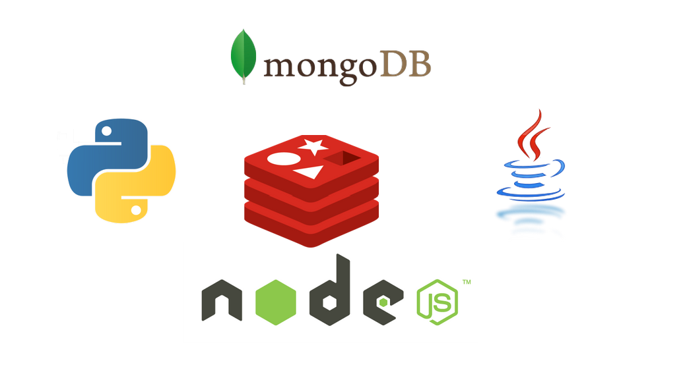

NodeJS
Como? Cuando? Por qué?
Agenda
Como funciona NodeJS
Concurrencia en Node
NodeJS NO es solo HTTP
Networking con NodeJS
NodeJS en Sistemas distribuidos
Mi opinion :D!
Repaso de SO
- CPU bound Process
- Procesos que estan condicionados por el CPU, es decir, mejoran si el CPU mejora!
- Procesamiento de audio, calculos matriciales, etc.
- I/O bound Process
- Procesos que estan condicionados por I/O, es decir, mejoran si el subsistema de I/O mejora!
- File system, bases de datos, Networking, etc.
La mayoria de las apps son I/O BOUND!
Arquitectura de NodeJS
Event-Driven!
Asynchronous Programming!
Inspirado por Twisted, EventMachine, etc...
Single-thread (User space)
Utiliza en libev (event-loop)
Utiliza libeio (POSIX I/O asincrona)
y otras cosas...

THE event-loop (C10K)
- 
Concurrencia hecha simple

Callbacks
Comunes en JS, tod@s las usamos!
Pueden generar el "Callback HELL o Pyramid of Doom" Facilmente! 😈😈😈
doSomething(params, doThisWhenFinish);
Callbacks Hell
do_algo_1(function(input_value, result1) {
do_algo_2(function(result2) {
do_algo_3(function(result3) {
do_algo_4(function(result4) {
do_algo_5(function(output) {
// Procesar la SALIDA!!!
});
});
});
});
});
Promises
Representan un valor que eventualmente sera retornado
Alivian el "Callback HELL" porque "aplanan" el codigo
Existe un PROPOSAL open source
var promiseAction = function(arg1, arg2) {
var deferred = Q.defer();
firstAction(arg1, arg2, deferred.resolve);
//Retornamos la promesa
return deferred.promise;
}
// Encadenamos las promesas
promiseAction(arg1, arg2).then(callback);
EventEmitter
Incluidos en la lib standard
Potentes y la API es simple
Permite crear eventos propios
var events = require('events);
var emitter = new events.EventEmitter();
var sayHi = function say(){
console.log('Hola MeetupJS');
}
//Registramos el listener
emitter.on('sayHi', sayHi);
//Alguien emite el evento
emitter.emit('sayHi');
No solo existe HTTP!
Networking
- El event loop es eficiente para I/O bound
- Pero...Networking es CPU bound?
- Segur@s?
- Respuesta: Networking === I/O
- Entonces: Networking === I/O === NodeJs 😍😍😍
Usemos otros protocolos!
FTP, IRC, JABBER, MeetupJSProtocol (?)
Algunos Modulos: net, dgram, node-irc y mas
Distintas capas de transporte TCP y UDP
User Datagram Protocol (UDP), No orientado a la conexion!
Transmission Control Protocol (TCP), Orientado a la conexion!
Simple UDP Server!
var dgram = require('dgram');
var server = dgram.createSocket('udp4');
server.on('message', function (message, remote) {
console.log(remote.address + ':' + remote.port +' - ' + message);
});
server.bind(9000);
Simple TCP Server!
var net = require('net');
var server = net.createServer();
server.listen(PORT, HOST);
server.on('connection', function(sock) {
console.log('CONEXION: ' + sock.remoteAddress +':'+ sock.remotePort);
});
Sistemas distribuidos
Bienvenidos...

Sistemas distribuidos
- Maquinas conectadas a una red
- Las maquinas se comunican y coordinan sus acciones intercambiando mensajes.
- Intentan solucionar un objetivo comun
- mas...
Ejemplo de arquitectura

Todo va tomando otra forma...
"Un gran poder conlleva una gran Responsabilidad"
by "Tio Ben"- Siempre, debemos evaluar antes de hacer
- Escalar no es trivial
- Nuestro stack comienza a crecer (ojo!)
- Tenemos que monitorear y mantener vivos mas servicios
- Programar es divertido y es lo que nos gusta! 😅
Mi humilde opinion
- NodeJS no es solo para API's REST (HTTP)!
- Existe una gran cantidad de MODULOS y gran comunidad
- Es muy eficiente/divertido para I/O bound!
- Todo el Stack debe ser Non-Blocking, sino alguien nos va a limitar
- Recomiendo Nodejs como "puerta de entrada", "proxy", etc.
- Por favor eviten procesos CPU bound en NodeJS
- En produccion usar FOREVER
- Multicore? CLUSTER
- Prueben NodeJS en Heroku
- Con una cerveza podemos seguir charlando 😍
Muchas Gracias!
¿¿¿ Preguntas ???
var options = {volume: const.HIGH};
publico.on('aplauso', function(data) {
orador.agradece(data);
});
while(1) {
publico.aplaudir(options);
}